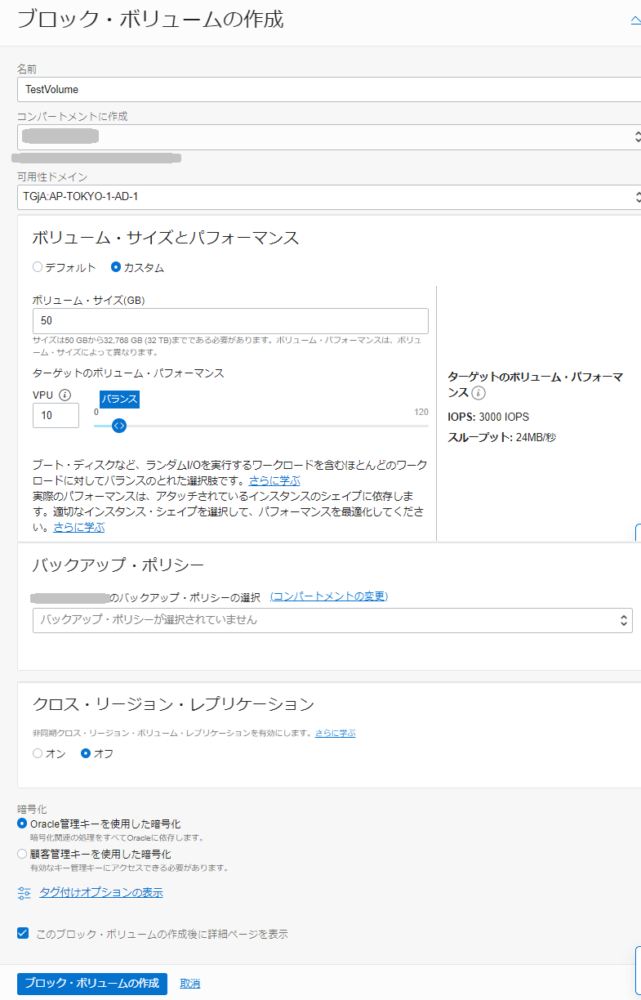
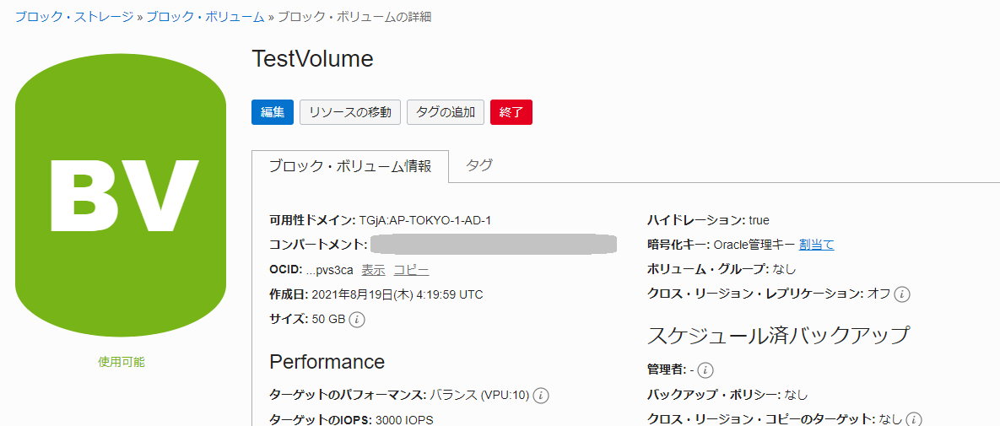
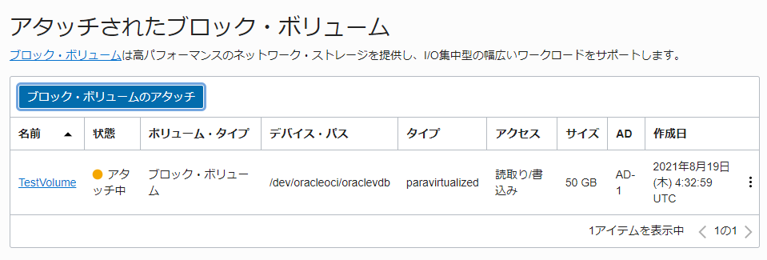

チュートリアル一覧に戻る : Oracle Cloud Infrastructure チュートリアル
Oracle Cloud Infrastructure ブロック・ボリューム・サービスを利用することにより、ベアメタル・インスタンスや仮想マシン・インスタンスからブロックデバイスとして利用することができるボリュームを、簡単に作成、管理することができます。用途に応じたサイズのボリュームを作成、インスタンスへのアタッチ、変更などが可能です。インスタンスからボリュームに対するアクセスは iSCSI もしくは準仮想化を通じて行われます。 インスタンスにアタッチしたボリュームは、通常のディスク・ドライブと同じようにOSから利用することができ、またインスタンスからデタッチし、新しい別のインスタンスにアタッチすることで、データを失うことなく移行することが可能です。
ブロック・ボリュームの典型的なユースケースとしては以下のようなものがあります。
- インスタンスのストレージの拡張 : Oracle Cloud Infrastructure の ベアメタル・インスタンス、仮想マシン・インスタンスいずれに対しても、ブロック・ボリュームをアタッチすることでOSのストレージ領域を拡張することができます。
- 永続化されたストレージ領域の利用 : インスタンスを終了(Terminate)しても、ブロック・ボリュームとそこに格納されたデータは永続します。これらはボリュームを明示的に終了(Terminate)するまで存続します。
- インスタンス間のデータの移動 : インスタンスにアタッチしたブロック・ボリュームをデタッチし、別のインスタンスにアタッチすることにより、1つのインスタンスから別のインスタンスにデータを簡単に移動させることができます。 このチュートリアルでは、ブロック・ボリュームの基本的な使い方をご案内します。
ブロック・ボリュームのバックアップについては応用編のブロック・ボリュームをバックアップする をどうぞ。
所要時間 : 約20分
前提条件 :
- その2 - クラウドに仮想ネットワーク(VCN)を作る とその3 - インスタンスを作成する を完了し、仮想クラウド・ネットワーク(VCN)の中に任意のLinuxインスタンスの作成が完了していること
注意 : チュートリアル内の画面ショットについては Oracle Cloud Infrastructure の現在のコンソール画面と異なっている場合があります
参考動画： 本チュートリアルの内容をベースとした定期ハンズオンWebinarの録画コンテンツです。操作の流れや解説を動画で確認したい方はご参照ください。
1. ブロック・ボリュームの作成
-
コンソールメニューから ストレージ → ブロック・ストレージ → ブロック・ボリューム を選択し、ブロック・ボリュームの作成 ボタンを押します。
-
立ち上がった ブロック・ボリュームの作成 ウィンドウに以下の項目を入力し、ブロック・ボリュームの作成 ボタンを押します。
- 名前 - 任意 (集合ハンズオン研修の場合は、講師の指示に従ってください)
- コンパートメントに作成 - デフォルトで現在のコンパートメントが選択されています。もし別のコンパートメントに作成したい場合は選択します。
- 可用性ドメイン - - 第3章でインスタンスを作成したものと同じアベイラビリティ・ドメインを選択。
POINT
ブロック・ボリュームは同じ可用性ドメイン(AD)にあるインスタンスからのみアクセスが可能です。別の可用性ドメインや、別のリージョンのインスタンスからアクセスすることはできません。
-
ボリューム・サイズとパフォーマンス
- カスタム を選択
- サイズ(GB) - 50 を入力
- VPU - 10 (バランス) を選択
- バックアップ・ポリシー - ここでは空欄のまま。（必要に応じてポリシーを選択することで自動的にバックアップ取得することも可能です）
- クロス・リージョン・レプリケーション - ここでは空欄のまま。
- 暗号化 - Oracle管理キーを使用した暗号化 が選択されていることを確認

-
ボリュームの作成中は プロビジョニング中 と表示されます。

-
ボリュームの作成が完了し、ステータスが 使用可能 になったことを確認します。

2. ボリュームのインスタンスへのアタッチ
第3章で作成した仮想マシンのコンピュート・インスタンスに、先ほど作成したブロック・ボリュームをアタッチします。
アタッチ方法はiSCSIと準仮想化が選べますが、仮想マシン・インスタンスからのアタッチであれば準仮想化のほうが使い勝手がよいので今回は準仮想化を選択していきます。（念のためiSCSIの場合の追加手順も記載してあります。）
- 準仮想化 - OSからのコマンド操作は不要なので利用は簡単。
- iSCSI - コンソールでの操作に加え、追加のOSコマンド操作が必要。ベアメタル・インスタンスの場合はiSCSIのみ。
ブロック・ボリュームの画面からもアタッチ操作ができますが、今回はコンピュート・インスタンスの画面からアタッチしていきましょう。
-
コンソールメニューから コンピュート → コンピュート → インスタンス を選択します。
-
第2章で作成した実行中のインスタンス名のリンクをクリックし、インスタンスの詳細画面にナビゲートします。

-
画面下部の リソース から アタッチされたブロック・ボリューム を選択し、ブロック・ボリュームのアタッチ ボタンを押します。

- 立ち上がった ブロック・ボリュームのアタッチ ウィンドウに以下の項目を入力し、アタッチ ボタンを押します。
-
ボリューム・アタッチメント・タイプ - 準仮想化 を選択
-
転送中暗号化の使用 - 空欄のまま
-
ボリューム
- ボリュームの選択 を選択します。
- <コンパートメント名>の **ボリューム** - 先ほど作成したブロック・ボリュームを選択します
-
デバイス・パス - 任意のパスを選択します
-
アクセス - 読取り/書込み を選択

-
-
（アタッチメント・タイプでiSCSIタイプを選択した場合のみ） ブロック・ボリュームのアタッチ のウィンドウが開きます。内容を確認したらウィンドウを閉じます。

-
アタッチ中は、ステータスが アタッチ中 と表示されます。

-
アタッチが完了すると、ステータスが アタッチ済 に変わります。

-
（アタッチメント・タイプでiSCSIタイプを選択した場合のみ） アタッチされたボリュームの右側の ・・・ メニューから iSCSIコマンドおよび情報 を選択します。

-
（アタッチメント・タイプでiSCSIタイプを選択した場合のみ） 立ち上がった iSCSIコマンドおよび情報 ウィンドウの中に、インスタンスから iSCSI デバイスにアクセスするためのコマンドをコピーします。 アタッチ・コマンド というコマンドブロックの左下にある コピー リンクをクリックし、表示が コピー済 となったことを確認します。

-
（アタッチメント・タイプでiSCSIタイプを選択した場合のみ） インスタンスに opcユーザーで sshアクセスし、先ほどコピーしたコマンドをペーストして実行し、実行結果が successful となっていることを確認します。
実行した iSCSI コマンドによって、インスタンスを再ブートした後も、iSCSI ボリュームに再度ログインされます。
コマンドは再起動の度に実行する必要はありません。

-
以下のコマンドを実行し、OSから新しくブロックデバイスが認識されていることを確認します。
lsblk

上記の例では、新しく /dev/sdb という50GBのボリュームが認識されています。
3. ボリュームのフォーマットおよびマウント
その後、実際にボリューム上にデータを配置する際には、各OS上で適切なファイルシステムを構築して利用してください。
ここでは、Oracle Linux 7.9 の場合を例にしてサンプルの手順を示します。
-
lsblk コマンドでデバイスの確認を行います。この環境では、/dev/sdbが追加したブロック・ボリュームです。
$ sudo lsblk NAME MAJ:MIN RM SIZE RO TYPE MOUNTPOINT sdb 8:16 0 50G 0 disk sda 8:0 0 46.6G 0 disk ├-sda2 8:2 0 8G 0 part [SWAP] ├-sda3 8:3 0 38.4G 0 part / └-sda1 8:1 0 200M 0 part /boot/efi $ -
parted コマンドで現在のパーティション情報を確認します。/dev/sdaはブート・ボリュームです。Oracle Linux 7.9のイメージではパーティションテーブルはgptで、ファイルシステムはxfsになっています。/dev/sdbにはまだパーティションはありません。
$ sudo parted -l Model: ORACLE BlockVolume (scsi) Disk /dev/sda: 50.0GB Sector size (logical/physical): 512B/4096B Partition Table: gpt Disk Flags: Number Start End Size File system Name Flags 1 1049kB 211MB 210MB fat16 EFI System Partition boot 2 211MB 8801MB 8590MB linux-swap(v1) 3 8801MB 50.0GB 41.2GB xfs Error: /dev/sdb: unrecognised disk label Model: ORACLE BlockVolume (scsi) Disk /dev/sdb: 53.7GB Sector size (logical/physical): 512B/4096B Partition Table: unknown Disk Flags: $ -
parted コマンドでパーティションを作成します。
$ sudo parted -s -a optimal /dev/sdb \ mklabel gpt \ mkpart primary 0% 100% -
作成できたか確認します。sdb1 としてパーティションが作成されたことがわかります。
$ sudo parted /dev/sdb print Model: ORACLE BlockVolume (scsi) Disk /dev/sdb: 53.7GB Sector size (logical/physical): 512B/4096B Partition Table: gpt Disk Flags: Number Start End Size File system Name Flags 1 1049kB 53.7GB 53.7GB primary $ sudo lsblk NAME MAJ:MIN RM SIZE RO TYPE MOUNTPOINT sdb 8:16 0 50G 0 disk └-sdb1 8:17 0 50G 0 part sda 8:0 0 46.6G 0 disk ├-sda2 8:2 0 8G 0 part [SWAP] ├-sda3 8:3 0 38.4G 0 part / └-sda1 8:1 0 200M 0 part /boot/efi $ -
mkfs.xfs でファイルシステムを作成します。
$ sudo mkfs.xfs /dev/sdb1 meta-data=/dev/sdb1 isize=256 agcount=4, agsize=3276672 blks = sectsz=4096 attr=2, projid32bit=1 = crc=0 finobt=0, sparse=0, rmapbt=0 = reflink=0 data = bsize=4096 blocks=13106688, imaxpct=25 = sunit=0 swidth=0 blks naming =version 2 bsize=4096 ascii-ci=0, ftype=1 log =internal log bsize=4096 blocks=6399, version=2 = sectsz=4096 sunit=1 blks, lazy-count=1 realtime =none extsz=4096 blocks=0, rtextents=0 $ -
マウントポイントを作成します。
$ sudo mkdir /mnt/bv1 $ sudo chown opc:opc /mnt/bv1 -
lsblk コマンドでsdb1のUUIDを確認します。
$ lsblk -o +UUID NAME MAJ:MIN RM SIZE RO TYPE MOUNTPOINT UUID sdb 8:16 0 50G 0 disk └-sdb1 8:17 0 50G 0 part a773b2a6-e49c-4c90-8d53-d18d8832f61e sda 8:0 0 46.6G 0 disk ├-sda2 8:2 0 8G 0 part [SWAP] dbabf4fc-a92c-4317-90a8-16182288fde5 ├-sda3 8:3 0 38.4G 0 part / 7415dba2-8eff-478e-8c0c-24321f669e0d └-sda1 8:1 0 200M 0 part /boot/efi 6669-0EBB $ -
/etc/fstab ファイルを編集し、以下の内容を追記します。
$ sudo vi /etc/fstab追記する内容
UUID=<確認したUUID> /mnt/bv1 xfs defaults,_netdev,nofail 0 2 -
fstabの設定を反映します。
$ sudo mount -a -
df コマンドで確認してみます。/mnt/bv1 にマウントされたことが確認できました。
$ df -h Filesystem Size Used Avail Use% Mounted on devtmpfs 742M 0 742M 0% /dev tmpfs 773M 0 773M 0% /dev/shm tmpfs 773M 8.7M 764M 2% /run tmpfs 773M 0 773M 0% /sys/fs/cgroup /dev/sda3 39G 8.9G 30G 23% / /dev/sda1 200M 7.4M 193M 4% /boot/efi tmpfs 155M 0 155M 0% /run/user/0 tmpfs 155M 0 155M 0% /run/user/994 tmpfs 155M 0 155M 0% /run/user/1000 /dev/sdb1 50G 33M 50G 1% /mnt/bv1 $
チュートリアル一覧に戻る : Oracle Cloud Infrastructure チュートリアル